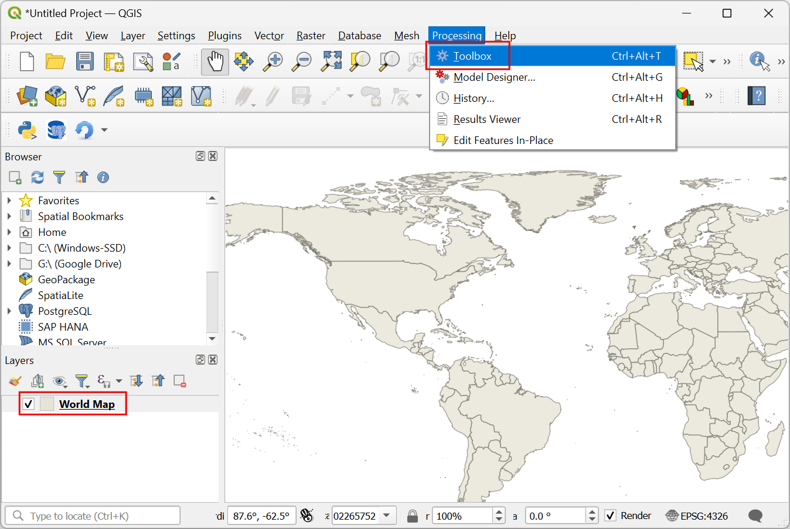
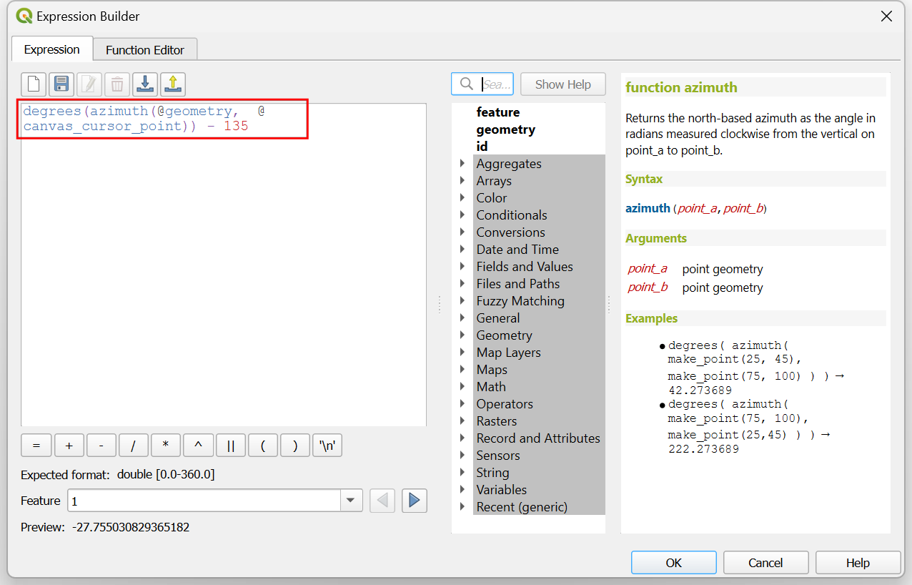
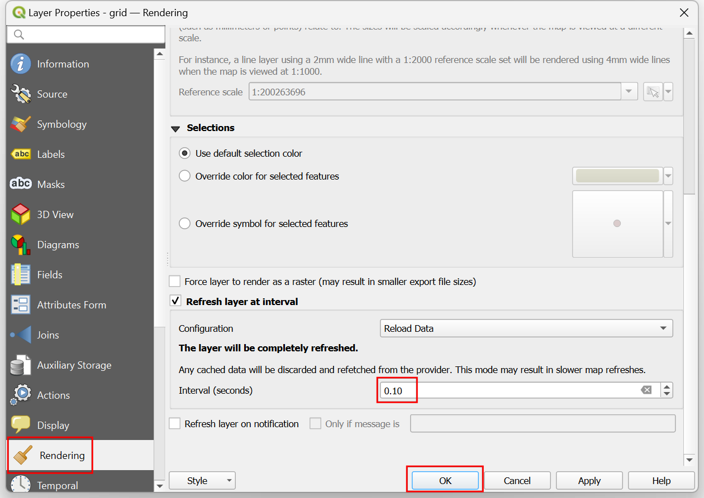

Ujaval Gandhi
Ujaval GandhiEen interactief kaartvenster maken (QGIS3)¶
Deze handleiding laat zien hoe objecten te maken die dynamisch worden bijgewerkt als u uw cursor verplaatst over jet kaartvenster van QGIS. We zullen het borstelen van het kaartvenster maken met expressies om objecten te laten reageren op de bewegingen van de cursor.
Overzicht van de taak¶
We zullen een raster maken van pictogrammen van QGIS en een data-bepaalde ‘override’ toepassen voor het draaien van de pictogrammen om ervoor te zorgen dat de pictogrammen de bewegingen van de cursor volgen.

Procedure¶
We zullen beginnen door een raster te maken. Om ons raster een globaal bereik te geven, kunnen we de kaart van de wereld laden in het kaartvenster. U kunt world typen in het van voor de coördinaten aan de onderzijde van het venster van QGIS en drukken op Enter. Dit is een van de verscheidene verborgen easter eggs in QGIS. U kunt andere easter eggs ontdekken op ons kanaal van YouTube.

Een nieuwe laag
Wereldkaartzal worden toegevoegd aan het paneel Lagen van QGIS. Ga naar .

Zoek en lokaliseer het algoritme . Dubbelklik om het te openen.

Klik, in het dialoogvenster Grid maken, op het keuzemenu .

Stel vervolgens de Horizonale afstand en de Verticale afstand in op
20graden. Klik op de knop…naast Raster en selecteer Opslaan als bestand. Blader naar een map op uw computer en voer de naamgrid.gpkgin. Klik op Uitvoeren.

Een nieuwe laag
gridzal worden toegevoegd. Klik op de knop Paneel Laag opmaken openen in het paneel Lagen. Klik op de Eenvoudige markering.

Selecteer, in het keuzemenu,
SVG-markeringals het symboollaagtype.

Scroll naar beneden naar het gedeelte SVG-browser en selecteer de map logos. Selecteer het pictogram van QGIS.

Scroll naar de optie Grootte en stel de Breedte in op
5.

Zoek vervolgens de optie Rotatie en klik op de knop data-bepaalde ‘override’. Selecteer Bewerken….

We zullen een expressie toevoegen die dynamisch het draaien van het pictogram zal berekenen, gebaseerd op de huidige positie van de cursor. Omdat ons pictogram wijst naar het azimut 135°, zal dat de rotatie 0 zijn. Als de cursor beweegt, zal de expressie de hoek van het azimut tussen het pictogram en de locatie van de cursor berekenen en de hoek berekenen waarmee het moet worden gedraaid om naar de cursor te wijzen. Voer de volgende expressie en klik op OK.
degrees(azimuth(@geometry, @canvas_cursor_point)) - 135
Het kaartvenster reageert nog niet op de beweging van de cursor, omdat het niet vernieuwt, tenzij u de kaart verplaatst. Laten we het automatisch vernieuwen. Klik met rechts op de laag
griden selecteer Eigenschappen.

Schakel naar de tab Renderen. Scroll naar beneden en selecteer Laag vernieuwen met interval. Stel het interval in op een klein getal, zoals
0.1(d.i. 100ms) en klik op OK.

Terug in het hoofdvenster, schakel de laag
Wereldkaartuit. Als u nu de cursor verplaatst, zullen alle pictogrammen naar uw huidige positie van de cursor wijzen.

Deze leuke oefening werd ontworpen om u te helpen begrijpen hoe de variabele @canvas_cursor_point te gebruiken om dynamische lagen te maken die reageren op de beweging van de muis.
If you want to give feedback or share your experience with this tutorial, please comment below. (requires GitHub account)